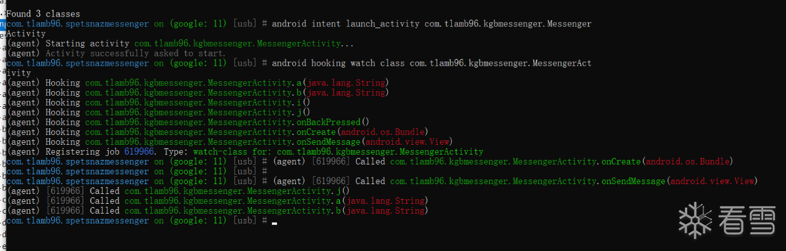
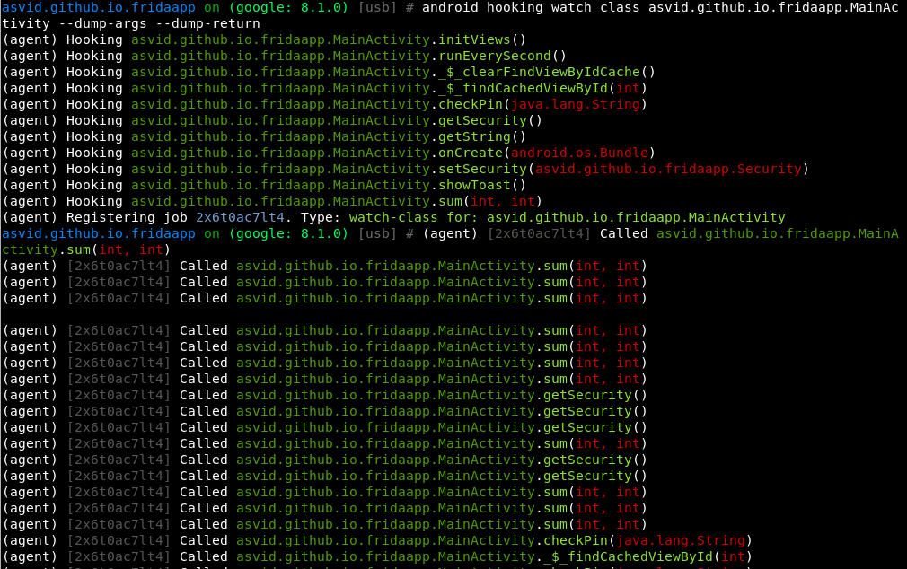
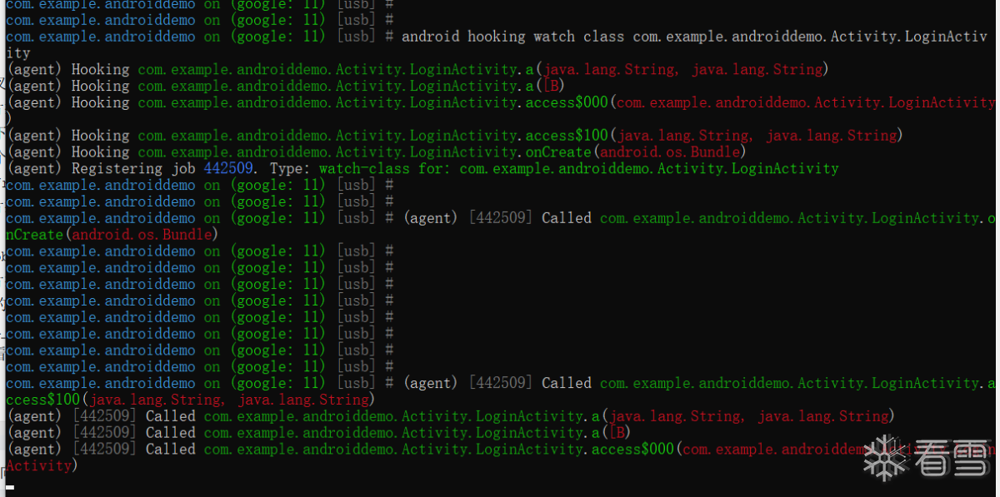
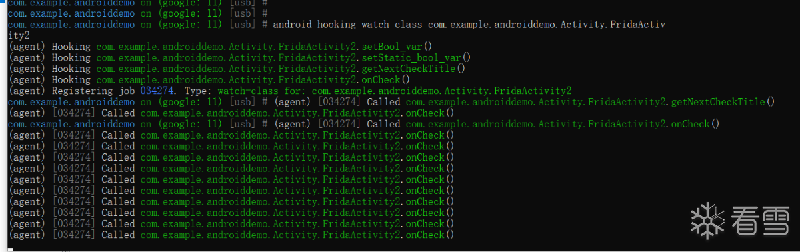
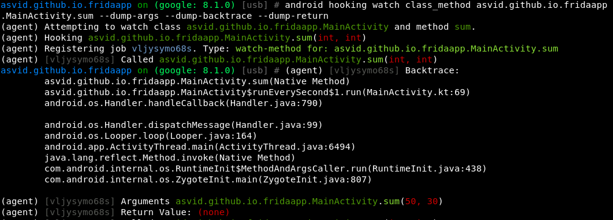
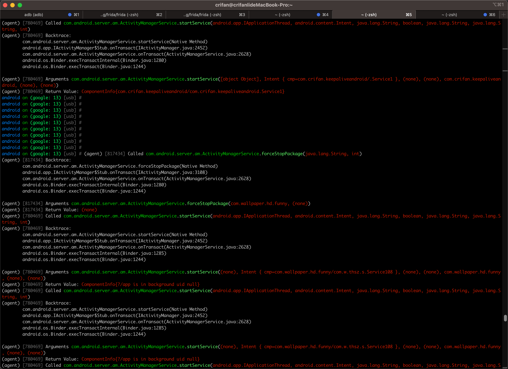
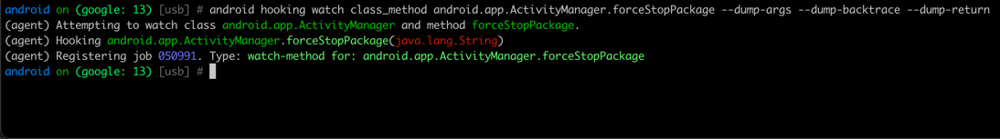
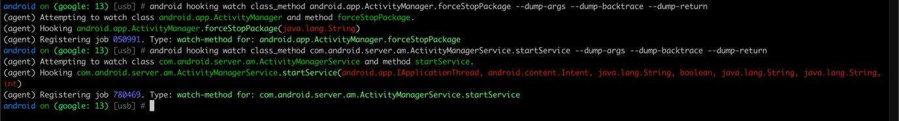
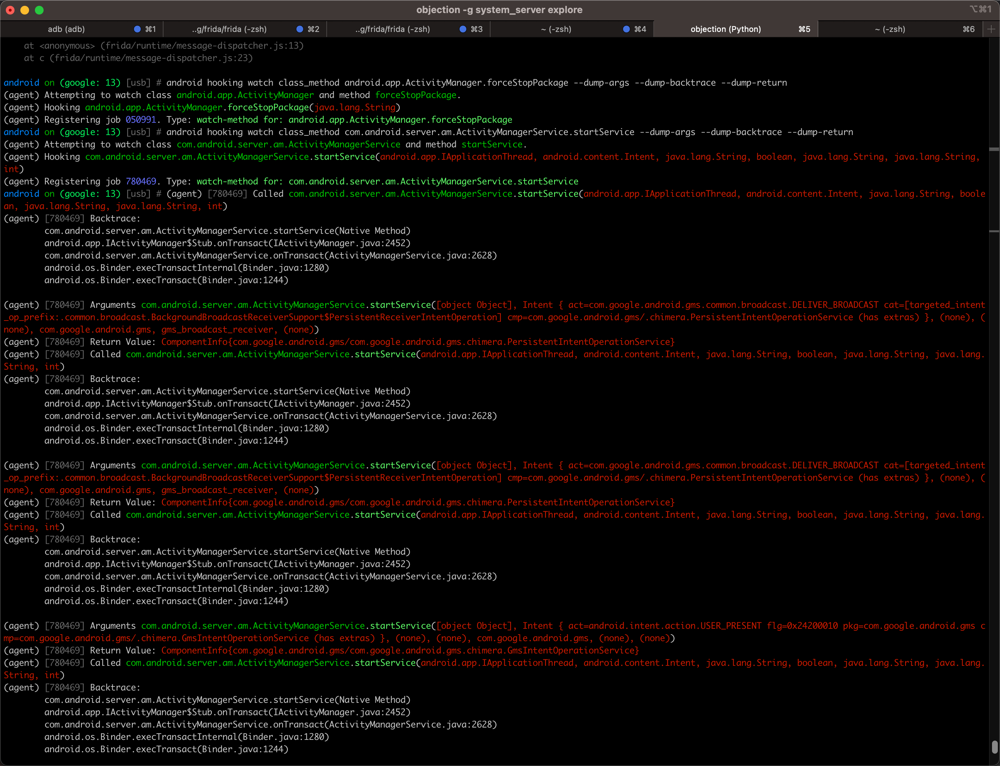
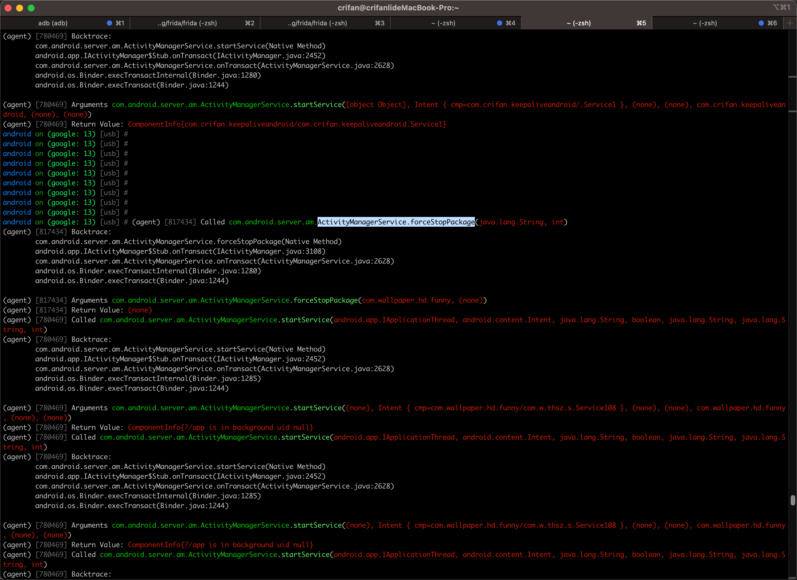

android hooking watch
hook安卓的类
- 命令
android hooking watch class {androidFullClassName}
举例
com.tlamb96.kgbmessenger.MessengerActivity
- 命令
android hooking watch class com.tlamb96.kgbmessenger.MessengerActivity- 
asvid.github.io.fridaapp.MainActivity
- 命令
android hooking watch class asvid.github.io.fridaapp.MainActivity --dump-args --dump-return- 
com.example.androiddemo.Activity.LoginActivity
- 命令
android hooking watch class com.example.androiddemo.Activity.LoginActivity- 
com.example.androiddemo.Activity.FridaActivity2
- 命令
android hooking watch class com.example.androiddemo.Activity.FridaActivity2- 
hook安卓的函数
- 命令
android hooking watch class_method {androidFunctionName}
举例
asvid.github.io.fridaapp.MainActivity.sum
- 命令
android hooking watch class_method asvid.github.io.fridaapp.MainActivity.sum --dump-args --dump-backtrace --dump-return- 
com.android.server.am.ActivityManagerService.forceStopPackage
命令
android hooking watch class_method com.android.server.am.ActivityManagerService.forceStopPackage --dump-args --dump-backtrace --dump-return- 图
- 
log
- 添加时
android on (google: 13) [usb] # android hooking watch class_method com.android.server.am.ActivityManagerService.forceStopPackage --dump-args --dump-backtrace --dump-return (agent) Attempting to watch class com.android.server.am.ActivityManagerService and method forceStopPackage. (agent) Hooking com.android.server.am.ActivityManagerService.forceStopPackage(java.lang.String, int) (agent) Registering job 817434. Type: watch-method for: com.android.server.am.ActivityManagerService.forceStopPackage 触发时
android on (google: 13) [usb] # (agent) [817434] Called com.android.server.am.ActivityManagerService.forceStopPackage(java.lang.String, int) (agent) [817434] Backtrace: com.android.server.am.ActivityManagerService.forceStopPackage(Native Method) android.app.IActivityManager$Stub.onTransact(IActivityManager.java:3108) com.android.server.am.ActivityManagerService.onTransact(ActivityManagerService.java:2628) android.os.Binder.execTransactInternal(Binder.java:1280) android.os.Binder.execTransact(Binder.java:1244) (agent) [817434] Arguments com.android.server.am.ActivityManagerService.forceStopPackage(com.wallpaper.hd.funny, (none)) (agent) [817434] Return Value: (none)
- 添加时
- 图
android.app.ActivityManager.forceStopPackage
- 命令
android hooking watch class_method android.app.ActivityManager.forceStopPackage --dump-args --dump-backtrace --dump-return- 图
- 
- log
android on (google: 13) [usb] # android hooking watch class_method android.app.ActivityManager.forceStopPackage --dump-args --dump-backtrace --dump-return (agent) Attempting to watch class android.app.ActivityManager and method forceStopPackage. (agent) Hooking android.app.ActivityManager.forceStopPackage(java.lang.String) (agent) Registering job 050991. Type: watch-method for: android.app.ActivityManager.forceStopPackage
- 图
com.android.server.am.ActivityManagerService.startService
- 命令
android hooking watch class_method com.android.server.am.ActivityManagerService.startService --dump-args --dump-backtrace --dump-return- 图
- 
- log
android on (google: 13) [usb] # android hooking watch class_method com.android.server.am.ActivityManagerService.startService --dump-args --dump-backtrace --dump-return (agent) Attempting to watch class com.android.server.am.ActivityManagerService and method startService. (agent) Hooking com.android.server.am.ActivityManagerService.startService(android.app.IApplicationThread, android.content.Intent, java.lang.String, boolean, java.lang.String, java.lang.String, int) (agent) Registering job 780469. Type: watch-method for: com.android.server.am.ActivityManagerService.startService
- 图
触发时效果
效果1
- 图
- 
log
android on (google: 13) [usb] # (agent) [780469] Called com.android.server.am.ActivityManagerService.startService(android.app.IApplicationThread, android.content.Intent, java.lang.String, boolean, java.lang.String, java.lang.String, int) (agent) [780469] Backtrace: com.android.server.am.ActivityManagerService.startService(Native Method) android.app.IActivityManager$Stub.onTransact(IActivityManager.java:2452) com.android.server.am.ActivityManagerService.onTransact(ActivityManagerService.java:2628) android.os.Binder.execTransactInternal(Binder.java:1280) android.os.Binder.execTransact(Binder.java:1244) (agent) [780469] Arguments com.android.server.am.ActivityManagerService.startService([object Object], Intent { act=com.google.android.gms.common.broadcast.DELIVER_BROADCAST cat=[targeted_intent_op_prefix:.common.broadcast.BackgroundBroadcastReceiverSupport$PersistentReceiverIntentOperation] cmp=com.google.android.gms/.chimera.PersistentIntentOperationService (has extras) }, (none), (none), com.google.android.gms, gms_broadcast_receiver, (none)) (agent) [780469] Return Value: ComponentInfo{com.google.android.gms/com.google.android.gms.chimera.PersistentIntentOperationService} (agent) [780469] Called com.android.server.am.ActivityManagerService.startService(android.app.IApplicationThread, android.content.Intent, java.lang.String, boolean, java.lang.String, java.lang.String, int) (agent) [780469] Backtrace: com.android.server.am.ActivityManagerService.startService(Native Method) android.app.IActivityManager$Stub.onTransact(IActivityManager.java:2452) com.android.server.am.ActivityManagerService.onTransact(ActivityManagerService.java:2628) android.os.Binder.execTransactInternal(Binder.java:1280) android.os.Binder.execTransact(Binder.java:1244) (agent) [780469] Arguments com.android.server.am.ActivityManagerService.startService([object Object], Intent { act=com.google.android.gms.common.broadcast.DELIVER_BROADCAST cat=[targeted_intent_op_prefix:.common.broadcast.BackgroundBroadcastReceiverSupport$PersistentReceiverIntentOperation] cmp=com.google.android.gms/.chimera.PersistentIntentOperationService (has extras) }, (none), (none), com.google.android.gms, gms_broadcast_receiver, (none)) (agent) [780469] Return Value: ComponentInfo{com.google.android.gms/com.google.android.gms.chimera.PersistentIntentOperationService} ... (agent) [780469] Arguments com.android.server.am.ActivityManagerService.startService([object Object], Intent { act=android.intent.action.BATTERY_CHANGED cmp=com.google.android.apps.scone/.coex.StateService (has extras) }, (none), (none), com.google.android.apps.scone, (none), (none)) (agent) [780469] Return Value: ComponentInfo{com.google.android.apps.scone/com.google.android.apps.scone.coex.StateService} (agent) [780469] Called com.android.server.am.ActivityManagerService.startService(android.app.IApplicationThread, android.content.Intent, java.lang.String, boolean, java.lang.String, java.lang.String, int) (agent) [780469] Backtrace: com.android.server.am.ActivityManagerService.startService(Native Method) android.app.IActivityManager$Stub.onTransact(IActivityManager.java:2452) com.android.server.am.ActivityManagerService.onTransact(ActivityManagerService.java:2628) android.os.Binder.execTransactInternal(Binder.java:1280) android.os.Binder.execTransact(Binder.java:1244) (agent) [780469] Arguments com.android.server.am.ActivityManagerService.startService([object Object], Intent { act=com.google.android.gms.ipa.mediastoreindexer.INSTANT_INDEX cat=[targeted_intent_op_prefix:.ipa.mediastoreindexer.InstantIndexingIntentOperation] cmp=com.google.android.gms/.chimera.GmsIntentOperationService (has extras) }, (none), (none), com.google.android.gms, com.google.android.gms.ipa, (none)) (agent) [780469] Return Value: ComponentInfo{com.google.android.gms/com.google.android.gms.chimera.GmsIntentOperationService} (agent) [780469] Called com.android.server.am.ActivityManagerService.startService(android.app.IApplicationThread, android.content.Intent, java.lang.String, boolean, java.lang.String, java.lang.String, int) (agent) [780469] Backtrace: com.android.server.am.ActivityManagerService.startService(Native Method) android.app.IActivityManager$Stub.onTransact(IActivityManager.java:2452) com.android.server.am.ActivityManagerService.onTransact(ActivityManagerService.java:2628) android.os.Binder.execTransactInternal(Binder.java:1280) android.os.Binder.execTransact(Binder.java:1244) (agent) [780469] Arguments com.android.server.am.ActivityManagerService.startService([object Object], Intent { cmp=com.crifan.keepaliveandroid/.Service1 }, (none), (none), com.crifan.keepaliveandroid, (none), (none)) (agent) [780469] Return Value: ComponentInfo{com.crifan.keepaliveandroid/com.crifan.keepaliveandroid.Service1}
- 图
- 效果2
- 图
- 
- log
(agent) [780469] Called com.android.server.am.ActivityManagerService.startService(android.app.IApplicationThread, android.content.Intent, java.lang.String, boolean, java.lang.String, java.lang.String, int) (agent) [780469] Backtrace: com.android.server.am.ActivityManagerService.startService(Native Method) android.app.IActivityManager$Stub.onTransact(IActivityManager.java:2452) com.android.server.am.ActivityManagerService.onTransact(ActivityManagerService.java:2628) android.os.Binder.execTransactInternal(Binder.java:1285) android.os.Binder.execTransact(Binder.java:1244) (agent) [780469] Arguments com.android.server.am.ActivityManagerService.startService((none), Intent { cmp=com.wallpaper.hd.funny/com.w.thsz.s.Service108 }, (none), (none), com.wallpaper.hd.funny, (none), (none)) (agent) [780469] Return Value: ComponentInfo{?/app is in background uid null} ... (agent) [780469] Called com.android.server.am.ActivityManagerService.startService(android.app.IApplicationThread, android.content.Intent, java.lang.String, boolean, java.lang.String, java.lang.String, int) (agent) [780469] Backtrace: com.android.server.am.ActivityManagerService.startService(Native Method) android.app.IActivityManager$Stub.onTransact(IActivityManager.java:2452) com.android.server.am.ActivityManagerService.onTransact(ActivityManagerService.java:2628) android.os.Binder.execTransactInternal(Binder.java:1280) android.os.Binder.execTransact(Binder.java:1244) (agent) [780469] Arguments com.android.server.am.ActivityManagerService.startService([object Object], Intent { cmp=com.wallpaper.hd.funny/com.w.thsz.s.Service109 }, (none), (none), com.wallpaper.hd.funny, (none), (none)) (agent) [780469] Return Value: ComponentInfo{?/app is in background uid UidRecord{2cdc265 u0a244 TRNB idle change:procadj procs:0 seq(1409661,1409161)}} ... (agent) [780469] Called com.android.server.am.ActivityManagerService.startService(android.app.IApplicationThread, android.content.Intent, java.lang.String, boolean, java.lang.String, java.lang.String, int) (agent) [780469] Backtrace: com.android.server.am.ActivityManagerService.startService(Native Method) android.app.IActivityManager$Stub.onTransact(IActivityManager.java:2452) com.android.server.am.ActivityManagerService.onTransact(ActivityManagerService.java:2628) android.os.Binder.execTransactInternal(Binder.java:1280) android.os.Binder.execTransact(Binder.java:1244) (agent) [780469] Arguments com.android.server.am.ActivityManagerService.startService([object Object], Intent { cmp=com.wallpaper.hd.funny/com.w.thsz.s.Service111 }, (none), (none), com.wallpaper.hd.funny, (none), (none)) (agent) [780469] Return Value: ComponentInfo{?/app is in background uid UidRecord{2cdc265 u0a244 TRNB idle change:procadj procs:0 seq(1409838,1409161)}}
- 图